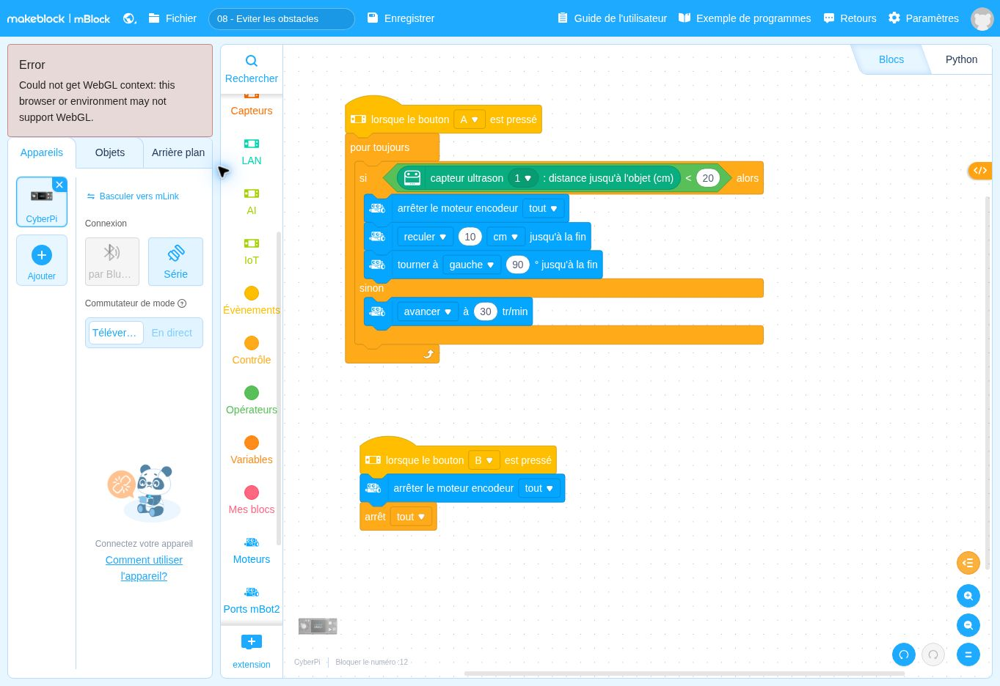

lorsque le bouton A ▾ est presséDépart
Ce que fait ce bloc : Bloc de départ : le programme se lance quand on appuie sur le bouton A du CyberPi, comme dans les fiches précédentes.
Pourquoi il est là : Vous choisissez le moment du départ.
Que doit faire le robot quand le passage est fermé ?
Avant de regarder le programme, écrivez en une phrase ce que vous pensez que le robot va faire. Lancement : A lance le programme ; B arrête le robot.
Se tromper ici est utile : c’est ce qui fait apprendre.
Voici le programme en français. Les lignes décalées vers la droite sont à l’intérieur d’une répétition ou d’un choix.
Quand j’appuie sur A :
je répète sans fin :
si la distance mesurée est inférieure à 20 cm :
1. j’arrête les moteurs ;
2. je recule de 10 cm ;
3. je tourne d’un quart de tour ;
sinon :
j’avance à 30 tr/min.
Quand j’appuie sur B :
j’arrête les moteurs et tous les scripts.
DépartContrôleAction du robotInformationÉcranMémoireCalcul
Ce que fait ce bloc : Bloc de départ : le programme se lance quand on appuie sur le bouton A du CyberPi, comme dans les fiches précédentes.
Pourquoi il est là : Vous choisissez le moment du départ.
Ce que fait ce bloc : Répète sans fin les blocs à l’intérieur.
Pourquoi il est là : Le robot doit tester l’obstacle en permanence, pas une seule fois.
Ce que fait ce bloc : C’est une décision à deux branches : SI l’obstacle est à moins de 20 cm, ALORS le robot fait les blocs du haut ; SINON il fait le bloc du bas.
Pourquoi il est là : C’est ce qui donne de l’intelligence au robot : il choisit son comportement d’après ce qu’il mesure.
Dans ce bloc, il y a :
Mot à connaître. Une « condition » est une question dont la réponse est oui ou non (ici : « l’obstacle est-il à moins de 20 cm ? »).
Ce que fait ce bloc : Stoppe les deux moteurs.
Pourquoi il est là : Le robot était en train de rouler : il faut d’abord l’immobiliser.
Ce que fait ce bloc : Recule de 10 cm.
Pourquoi il est là : On s’éloigne un peu de l’obstacle pour avoir la place de tourner sans le toucher.
Ce que fait ce bloc : Pivote d’un quart de tour.
Pourquoi il est là : Le robot change de direction pour ne plus faire face à l’obstacle.
Ce que fait ce bloc : Cette partie ne s’exécute que si l’obstacle n’est PAS à moins de 20 cm.
Pourquoi il est là : C’est le cas normal : le passage est libre.
Ce que fait ce bloc : Fait avancer le robot (il roule jusqu’à nouvel ordre).
Pourquoi il est là : Tant que rien n’est détecté, le robot avance.
Ce que fait ce bloc : Bloc de départ : il se déclenche quand on appuie sur B.
Pourquoi il est là : C’est le bouton d’arrêt : indispensable, car la boucle « pour toujours » ne s’arrête jamais d’elle-même.
Ce que fait ce bloc : Coupe les moteurs.
Pourquoi il est là : Le robot cesse de rouler.
Ce que fait ce bloc : Arrête tous les scripts du programme, y compris la boucle du script 1.
Pourquoi il est là : Sans lui, la boucle remettrait les moteurs en route aussitôt après.
Autres solutions : page Besoin d’aide ?
Changez un seul élément, prévoyez le résultat, puis vérifiez avec le robot.
Cette partie est réservée au formateur. Saisissez le code formateur pour l’ouvrir.
Code incorrect.